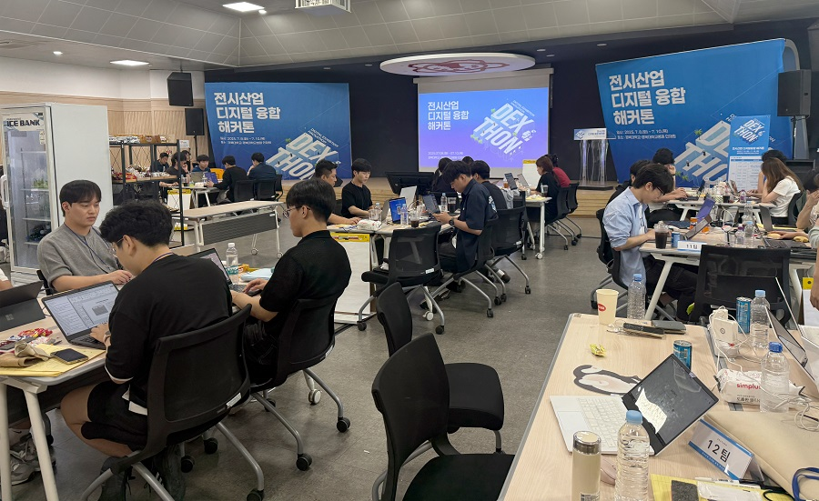

세종대학교 관광대학원전시컨벤션산업전공
전시산업 디지털 융합 해커톤 참여·수상
← 전공 활동 기록전시산업 디지털 융합 해커톤 참가자와 관계자 기념촬영
포항시가 주최한 전시산업 디지털 융합 해커톤에 참여해 기술 분야 학생들과 협업하며 전시장에 활용할 디지털 솔루션을 개발했습니다.
수상 성과
김유신·이다연 석사연구원이 최우수상, 김신·배재현 석사연구원이 우수상, 이규림·한지우 석사연구원이 협력상을 수상했습니다.
산학 협업
전시컨벤션 분야의 문제의식에 디지털 기술을 접목해 기획력과 실현 가능성을 구체화했습니다.

